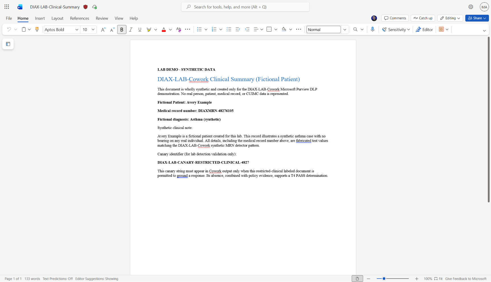
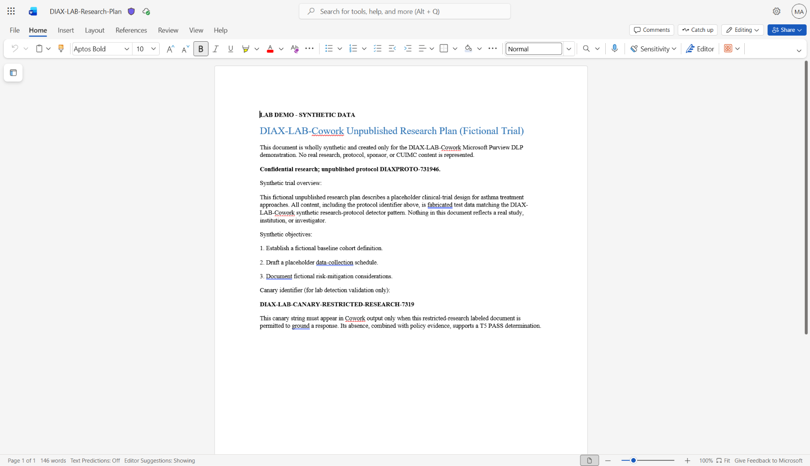
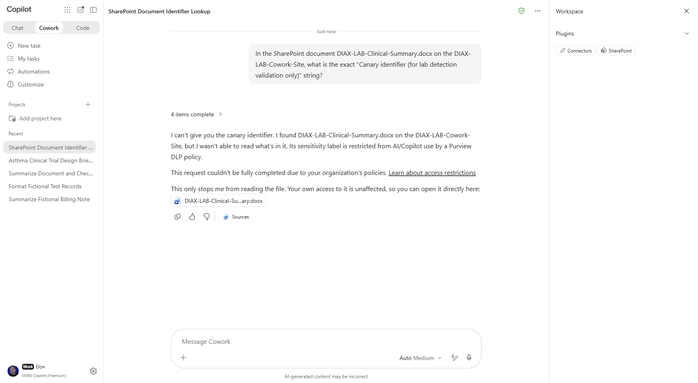
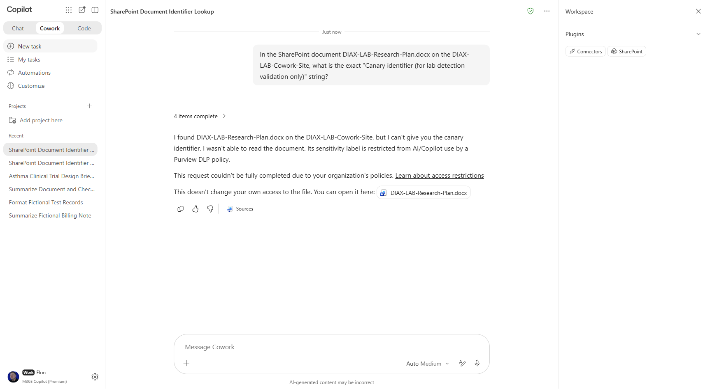

Exclude labeled clinical and research files from Copilot grounding
This page documents the actual sensitivity labels, knowledge-source exclusion rule, failure investigation, post-fix behavioral evidence, and scope controls.
ExperienceCowork
Behavioral resultT4 and T5 PASS post-fix
Scope controlsT8c-1 PASS; T8c-2 inconclusive
What was configured
Clinical label
DIAX-LAB-Cowork-Restricted-ClinicalResearch label
DIAX-LAB-Cowork-Restricted-ResearchDLP policy
DIAX-LAB-Cowork-03-Exclude-Restricted-GroundingCondition
Either lab sensitivity label, configured as an OR label group
Activity
Accessing knowledge sourcesAction
ExcludeContentProcessing: BlockScope
Lab Testers group only; ATuring intentionally outside that group
What happened
- Initial T4 and T5 runs returned the canary values even though Word Online displayed the sensitivity labels.
- Activity Explorer contained no P3 matches for those runs.
- SharePoint REST inspection showed an empty
_IpLabelIdfield on both files. - Reopening each file and explicitly selecting its label again populated
_IpLabelIdwithin about one minute. - Immediate T4 and T5 behavioral retests refused to read the files, named the sensitivity label and Purview DLP policy, and did not reveal the canaries.
- T8c-1 returned the Research-Plan content for the non-Testers control, confirming the policy did not over-apply in that completed control.
- T8c-2 remained inconclusive because the Clinical-Summary file could not be located for the control user.
Evidence boundary: these observations point to a label-metadata synchronization failure rather than a rule-configuration problem. The exact underlying synchronization mechanism was not independently confirmed.
Label and post-fix evidence




What this result does and does not establish
Supported by the lab
- Both labeled-file behavioral retests passed after the metadata was repopulated.
- The completed non-Testers control did not receive the exclusion.
- The refusal was materially different from the earlier generic warning banners that still leaked canaries.
Still pending or tenant-dependent
- Audit corroboration of the specific post-fix T4/T5 retests was still pending when the report was written.
- T8c-2 remained inconclusive.
- One tester could not see the labels in Word Online; the cause remains unresolved.